01. 前言简介
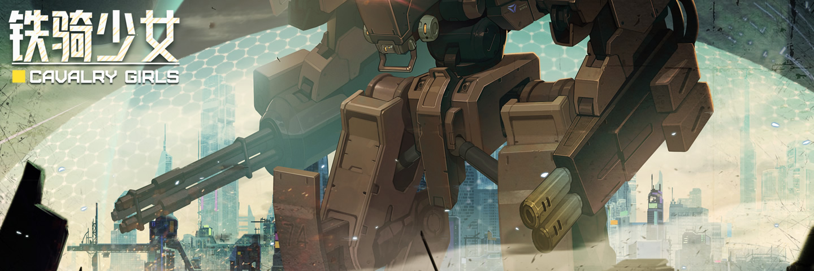
权利由来: 在铁骑少女所处的世界里, 尽管帝国军队的高层职位依然是由腐朽的旧贵族所占据, 但随着战场胜负开始取决于双方铁骑, 军事后勤的重心也渐渐地变成围绕铁骑而展开, 因此身为铁骑队长的你, 哪怕身份低微, 却也在后勤事务上拥有了一定的话语权, 你应该重视这份权利, 并积极介入到管理中, 组织生产, 安抚队友, 毕竟你无法指望上级, 他们除了给自己捞好处之外, 剩下的就是推诿责任了…
管理重心: 基地运营也是游戏的亮点和玩法, 在这场超现代的战争中, 即便驾驶员的战斗技巧再高超, 也很难抹平武器的差距, 因而战争的关键, 其实亦在于后勤水平, 你需要拓展人力资源, 升级基地的各项设施, 从敌军的残骸里搜集材料, 自主研发生产各式装备, 与此同时, 你还得开展团建, 跟其他驾驶员处理好关系, 只有赢得他们的信任, 才不至于在战场上孤立无援, 而本章便会围绕着这一切来展开.
02. 生活部门
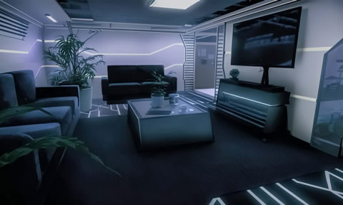 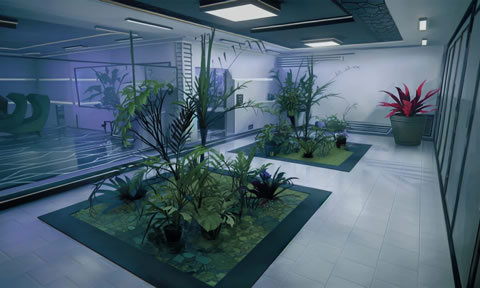 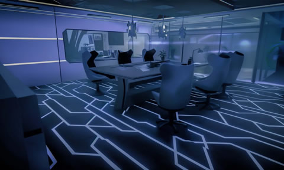 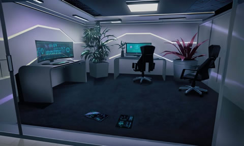
生活部门又被称之为"公共休息室", 它包含了娱乐室/休息室/会议室/档案室, 共 4 个区域, 驾驶员可以在这里休息娱乐以舒缓压力, 也可以动手做些小玩意, 甚至是召开会议或查阅资料, 这里也是队长和驾驶员们交流的好地方, 不过在这些区域进行操作, 大多需要以行动点为代价, 每天默认只有 2 个行动点, 但是你可以通过一些思潮奖励来获得更多行动点, 细节可查阅 思潮影响.html # 02.增益效果;
————
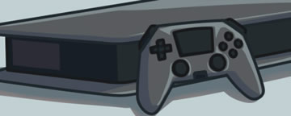01. 娱乐室 > 01. 打游戏:
可以降低自己(队长) 18 点脑负荷(来盘昆特牌);
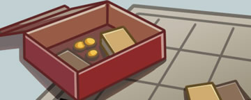01. 娱乐室 > 02. 玩桌游:
可以降低所有驾驶员 9 点脑负荷(当基地驾驶员数量少于 2 时无法执行该操作);
01. 娱乐室 > 03. 看电视:
根据电视节目的选择, 可能改变脑负荷/思潮倾向(甚至还可能赚钱), 节目类型可查阅 思潮影响.html # 01.书籍电视;
————
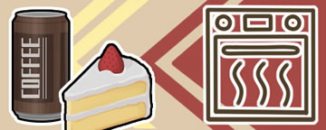02. 休息室 > 01. 烹饪料理:
在 [甜品/咖啡/干粮/营养膏/便当/可乐] 这 6 种物品中, 随机出两种进行二选一;
02. 休息室 > 02. 制作工艺品:
在 [玩偶/废旧报纸/各式书本/时尚杂志/漂亮衣服/弹壳/唱片] 这 7 种物品中, 随机出两种二选一;
02. 休息室 > 03. 制作家具:
在 [任意家具] 中随机出两种进行二选一(但 [垃圾/特殊家具/原始的背景] 不会出现) , 细节可查阅 家具清单.html;
02. 休息室 > 04. 代购烟或酒:
在 [香烟/酒] 中随机二选一, 烟酒可以用于贿赂长官, 甚至能用于偷税, 细节可查阅 费用计算.html # 04.偷税操作;
————
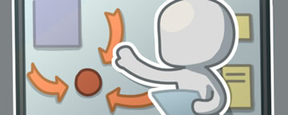03. 会议室 > 01. 召开作战会议:
随机为某个驾驶员 +1 升级点(可用于提升属性);
03. 会议室 > 02. 作战总结会议:
随机提升某个驾驶员某项属性(可突破能力上限, 但无尽模式该操作会变成升级点+1);
03. 会议室 > 03. 阅读书籍:
阅读当前拥有的1本书, 如果最后选择"还是不看了", 则这次操作不会消耗行动点, 但阅读书籍的选项当天就不再可用;
03. 会议室 > 04. 购买书籍:
花 12 资金买书, 系统会从所有书籍中随机挑 3 本让我们选, 有些书是违禁品, 最好尽早读掉, 被搜出会遭到惩罚;
————
04. 档案室 > 01. 单独邀请:
可以将某个驾驶员约到档案室来, 然后再耗费 1 行动点和这个驾驶员进行交流(现在驾驶员不会自动出现在档案室);
————
备注信息: 首先, 在整备阶段, 驾驶员们总会随机出现在某个部门里, 不过只有当他们位于生活部门时, 才能执行交互的操作, 其次, 当驾驶员的忠诚度到达一定阶段后, 你需要娱乐室里回复他们, 以触发忠诚度奖励事件, 才能进一步推进忠诚度的增长, 最后, 你甚至可以制定"行动计划", 快速安排每个行动点的用处, 以免去频繁打开公共休息区的麻烦, 更多的细节可查阅 基地部门.html # 02.生活部门;
03. 基建部门
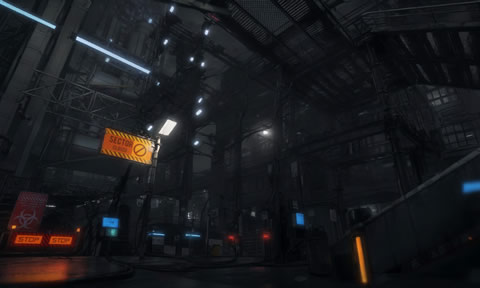
基建部门是产生物资的主要机构, 它包含人力资源组/人力仓库组/资源回收组/有机合成组/部件开发组/武器制造厂/武器工坊等多个子部门, 这些子部门大多可通过花费资金进行升级, 以便得到更高收益, 不过投资是个长期的过程, 尽管从长远来看总是有得赚, 但由于回报周期较长且收获带随机因素, 所以初期可能更多的时候还是需要依赖采购部门, 此外, 让这些部门运转还需要人力, 你得进行合理分配;
————
01. 人力资源组:
每天会提供固定数量的人力资源;
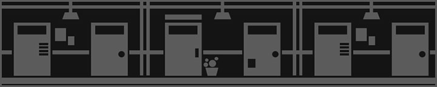02. 人力仓库组:
可以囤积当天没用完的人力资源;
————
03. 资源回收组:
消耗人力资源为代价为我们提供资金(具体数值取决于部门的等级);
04. 有机合成组:
消耗人力资源为代价为我们提供礼物(包括食物和勋章唱片等物品);
 05. 部件开发组:
05. 部件开发组:
消耗人力资源为代价为我们提供配件(配件价格取决于部门的等级);
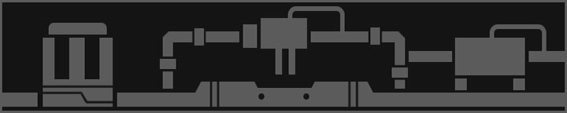06. 武器制造厂:
提供武器购买选项, 消耗人力可刷新(武器总价取决于部门的等级);
————
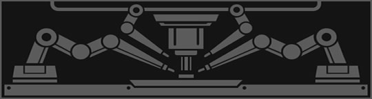07. 武器工坊:
可实现武器维修, 以及对武器/配件的升级(也可在整备机体的界面右键武器或配件进行操作, 效果是一样的);
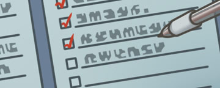08. 基建计划:
将人力资源分配到各个部门, 然后执行计划即可一次性获得所有基建产出, 提升操作效率, 免去打开基建界面的麻烦;
————
备注信息: 首先, 每天只能升级一次设施, 例如升级了人力资源组, 当天就无法再升级其他机构了, 其次, 同个设施每天消耗的人力会随着执行次数而上升, 例如当天首次执行资源回收组只需要 2 人力, 但第二次执行则需要 2+3 人力, 第三次执行则需要 2+3+3 人力, 最后, 克莱尔的忠诚度奖励可以降低人力消耗, 并且额外增加物品的选项数量, 更多的细节可查阅 基地部门.html # 03.基建部门;
04. 人事部门
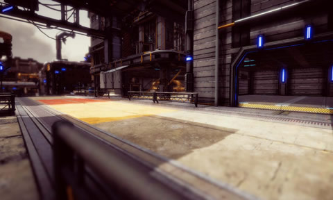
人事部门是管理驾驶员的地方, 你可以在整备人员的界面中, 为驾驶员执行赠送礼物/军衔晋升, 以及解锁技能/装备饰品等操作, 改变驾驶员的作战策略以及提升驾驶员的技能属性也是在这里处理, 此外, 当我们拥有"通行卡"时, 还可以邀请驾驶员进城娱乐, 这是降低驾驶员压力并增进彼此关系的好方法(甚至有福利 CG 放送, 但每天最多只能进城一次), 更多的细节可查阅 基地部门.html # 06.其他机构;
————
 01. 五号商店街(1 通行卡 和 1 心忠诚):
01. 五号商店街(1 通行卡 和 1 心忠诚):
小偷和奸商都很多, 但只要保管好钱包, 也能逛的很开心(地址:团结路与力量路交界处 / 效果: +1 忠诚度 & -15 脑负荷);
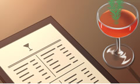02. 野狼酒吧 (2 通行卡 和 4 心忠诚):
提供廉价的酒精, 以及礼服租赁的服务, 是一个放松的好去处(地址:领袖路68号Ａ单元 / 效果: +2 忠诚度 & -25 脑负荷);
03. 红树电影院(3 通行卡 和 7 心忠诚):
已经十多年都没拍出新的电影了, 尽管如此, 还是常常一座难求(地址:思想塔45层11号 / 效果: +3 忠诚度 & -36 脑负荷);
04. 人工沙滩 (4 通行卡 和 9 心忠诚):
用建筑沙和巨型照明灯临时搭建出来的沙滩(都是废水不能游泳)(地址:思想塔45层12号 / 效果: +3 忠诚度 & -45 脑负荷);
05. 钢管厂温泉(5 通行卡 和 12心忠诚):
位于炼钢厂隔壁的温泉店, 由于使用炼钢冷却水所以很便宜(地址:第四工业区５号大道 / 效果: +3 忠诚度 & -54 脑负荷);
————
备注信息: 首先, 给同个驾驶员送礼时, 每天只有首次送礼会增加忠诚度, 更多的细节可查阅 忠诚好感.html, 其次, 给驾驶员晋升军衔时, 其他驾驶员的等级不能高于队长, 更多的细节可查阅 军衔等级.html, 再者, 给驾驶员解锁技能时, 需求的荣誉点会随着解锁技能的增多而逐步提升, 更多的细节可查阅 战场技能.html, 最后, 你可以花费荣誉点解锁更多饰品槽位, 更多的细节可查阅 饰品装备.html;
05. 采购部门
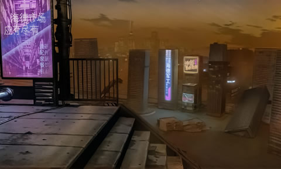
采购部门是使用资金购物的地方, 几乎所有物品都可能在这出现(前提是物品已被解锁), 每天它都会自动刷新购物选项, 你也可以手动刷新, 每天的首次刷新是免费的, 但之后就需要付钱了, 且金额会随着刷新次数增多而抬升, 如果不想某个选项被刷掉, 可点击"上锁"按钮将其固定, 值得一提的是, 桑的忠诚度奖励可以降低刷新所需资金并增加购物选项, 更多的细节可查阅 基地部门.html # 05.采购部门;
————
01. 黑市交易:
使用荣誉点让黑市商人刷新各种武器或配件(只是出现选项, 你还需要另外花资金才能购入), 急缺某项装备可以尝试;
06. 能源部门
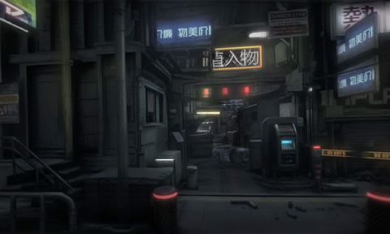
能源部门是产生电力资源的地方, 它由发电厂/解体厂, 以及物资仓库/合成车间构成, 发电厂每天都会产生电力, 电力是解体敌军残骸所需要的一种资源, 它是可以被积累的, 解体厂则存放着被我们击败的敌军残骸, 物资仓库存放着铁骑的所有装备, 以及解体残骸所得到的材料(如果想查看当前拥有的所有物品, 得点击外部界面左上角第四个"田形"按钮), 更多的细节可查阅 基地部门.html # 06.其他机构;
————
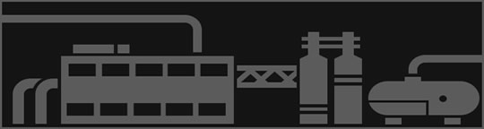01. 合成车间:
使用解体残骸所得到的材料, 可合成各种铁骑装备, 以及城防设施&饰品, 更多的细节可查阅 回收废料.html;
07. 军械部门
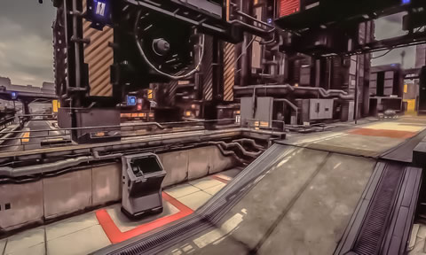
军械部门是管理铁骑的地方, 它包含整备机体/作战单元/机枪炮塔/训练靶场, 共 4 个子部门, 关于铁骑的装备系统与武器配置, 我们会在下一章既新手指南 > 装备配置.html 再展开具体叙述, 在这些部门中, 我们也可以执行"复制装备"与"维修武器"的操作, 就跟我们在基建部门的武器工坊里那样, 右键物品即可实现, 如果你想了解这些操作的算法详情等内容, 可以查阅 基地部门.html # 04.机体部门;
————
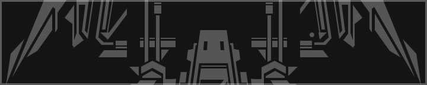01. 训练靶场:
模拟作战, 没有弹药费, 失败也没有惩罚, 在剧情模式的故事难度下甚至可以调出任意敌人进行演练;
08. 情报部门

情报部门可为我们提供明日的作战信息, 包括前来进攻的敌军类型/战场的天气状况/敌人进攻的主力方向(出兵位置), 提前知道这些情报对于战力安排将会有很大的帮助, 不过这些信息都是需要耗费人力资源才能获取的, 但是你可以尝试和赭石色打好关系, 因为他的忠诚度奖励就是去该部门帮忙分析资讯, 这能够让我们无需耗费人力资源就可以得知一切, 更多的细节可查阅 基地部门.html # 06.其他机构;
09. 城防部门
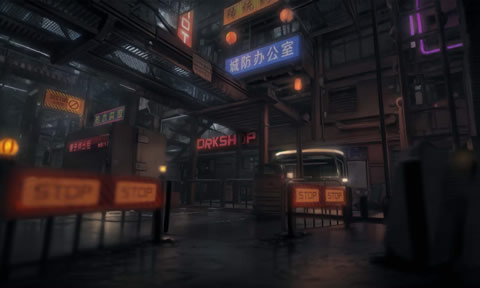
城防部门是安排防御和战场支援的地方, 你可以在这里整备战略武器/对大门进行强化/部署铁骑和各种城防设施, 值得一提的是, 在默认状态下你最多只能派遣 2 台主力机体和 1 台作战单元上场(可以靠思潮奖励提升上限), 而机枪炮塔则没有部署的数量上限, 不过大门前可供作战单位部署的点总共也就只有 8 个, 所以最好别想着依靠炮塔阵列来防御啦, 更多的细节可查阅 基地部门.html # 06.其他机构;
10. 营房宿舍
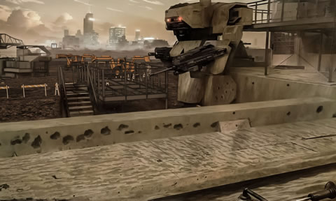
营房宿舍是驾驶员们休息的地方, 当驾驶员没有执行任务时, 在宿舍休息就可以降低脑负荷, 具体降低的数字则取决于宿舍的舒适度, 每 10 点宿舍舒适度可降低休息的驾驶员 1 点脑负荷, 而舒适度可靠装修来提升(往宿舍里安放家具即可提升舒适度), 宿舍在没有放置任何家具的情况下, 其实自带有 50 点的舒适度, 也就是说此时于宿舍休息的驾驶员可以减 5 点脑负荷, 更多的细节可查阅 家具清单.html;